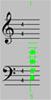
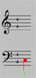
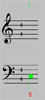

Manuel
Note importante
Arezzo n'est complètement opérationnel que
si son serveur dédié fonctionne.
Si cela ne semble pas être le cas, n'hésitez pas à
contacter l'équipe d'Arezzo. Généralités
Arezzo permet de faciliter l'apprentissage de
l'harmonie classique, de l'art de la mélodie et du contrepoint :
- Harmonie. Les règles du jeu consistent à créer une ligne
de basse, et ensuite de l'harmoniser. Cela veut dire qu'il vous faut
déterminer les 4 notes requises par accord pour les lignes de basse,
ténor, alto et soprano. Vous devez procéder en fonction des informations
de chiffrage qui spécifient, en dessous de chaque accord, quel est le
renversement d'accord qui doit être utilisé. Le système peut
vous aider en fournissant automatiquement le degré de chaque
accord.
- Mélodie. Il vous faut ici déterminer une ligne
mélodique correcte selon les canons classiques. Une fois celle-ci
introduite dans Arezzo, par exemple dans la voix de soprano, vous pourrez
demander à Arezzo de vérifier si elle est bien construite.
- Contrepoint. Arezzo
permet de vérifier les contrepoints de première espèce (note contre
note, avec une note par mesure) ayant jusqu'à 4 voix. Entrez les voix
dans Arezzo, par exemple dans la basse et le soprano, puis demandez à
Arezzo de vérifier leur cohérence.
Une fois que vous pensez avoir créé une harmonisation, une mélodie
ou un contrepoint correct, vous pouvez tester celui-ci, demander des conseils
si vous êtes en panne, l'écouter ou le sauver sur le serveur d'Arezzo.
Arezzo fournit également des outils de communication vous permettant
:
- d'envoyer par e-mail vos partitions pour demander de l'aide ou de
vous les envoyer pour impression ;
- de partager votre partition avec d'autres lors de travaux en groupe
;
- de discuter avec les autres utilisateur d'Arezzo grâe à
un système de chat intégré. Vous pouvez également,
si vous le souhaitez, utiliser les systèmes de communication
vocale sur Internet, tel NetMeeting de Microsoft.
Partitions
La notation de partition utilisée par Arezzo est classique. Pour
chaque mesure sont indiqués entre parenthèses le numéro
de la mesure et le numéro du premier accord de cette mesure. Cela
peut vous être utile pour mieux analyser les messages émis
par Arezzo.
Des objets variés peuvent êtres sélectionnés, et
colorés en fonction, en cliquant sur le bouton gauche de la souris ou à
l'aide des flèches du clavier :
|
 |
 |
 |
|
Accords en vert |
Notes
en rouge |
Chiffres, dans un renversement, en
rouge |
Il est alors possible d'exécuter les opérations courantes
suivantes :
- Sur les notes:
- Bouger une note dans un accord en la faisant
glisser avec le bouton gauche.
- Effacer la note sélectionnée en appuyant sur
la touche [Delete] ou [Backspace].
- Créer une note dans un accord en cliquant sur l'accord avec le
bouton droit (ou avec le bouton gauche tout en maintenant la touch
Control enfoncée) à la position requise dans l'accord. Utiliser
d'abord le boutton Insertion pour sélectionner le mode souhaité.
- Sur les accords (Vous pouvez utiliser la barre de défilement sous
la partition pour changer la position courante.) :
- Effacer l'accord sélectionné en appuyant sur
la touche [Delete] ou [Backspace] (désélectionner d'abord la note
sélectionnée, s'il le faut). Il n'est pas possible d'effacer la
dernière note restante.
- Insérer un nouvel accord après un accord en
cliquant sur le boutton droit (ou sur le bouton gauche tout en
maintenant la touch Control enfoncée). Il faut d'abord sélectionner
"Accord" avec le boutton Insertion.
Accords, notes et chiffres
Le menu Altération permet de choisir l'altération
souhaitée (b, bb, , #, X) sur la note ou chiffre sélectionné.
Le menu Renversement permet de modifier le renversement
de l'accord sélectionné (8, 3, 5, 5 3, 6,
6 3, 6 4 et septièmes). Les septièmes sont
regroupées dans un menu à part (7, 6 5, 4 3,
2, 7+, 6 5/, +6, +4). Attention :
les septièmes diminuées ne sont pas prises en compte par cette version
d'Arezzo.
Le menu Durée permet de modifier la durée
de l'accord sélectionné (1, 2, 4, 8,
16, 32). En fait, une
seule note sélectionnée dans l'accord modifie tout l'accord. Fonctionne
aussi pour une note simple.
Le menu Insertion gère l'insertion d'objets, note ou
accord, après un objet de même type en cliquant sur le bouton droit de la
souris (ou cliquer sur le bouton gauche tout en maintenant la touche
Control enfoncée) :
- Pour insérer un Accord, vous pouvez choisir entre un
accord ne contenant qu'une note de Basse et un accord Complet.
- Note la plus basse
permet de créer la note la plus basse dans l'accord courant.
- Basse, pour ajouter
une note dans la voix de basse.
- Ténor
- Alto
- Soprano
Fonctions
Les différentes opérations permises par Arezzo sont accessibles à
partir des menus présents dans la barre supérieure.
Le menu Fichier traite de la gestion de vos partitions sur le
site d'Arezzo pour :
- Créer une partition vide (Nouveau).
- Charger un fichier
particulier.
- Récupérer la version précédemment sauvée
de la partition (Version précédente).
- Effacer un fichier
particulier.
- Sauver la pièce
dans l'Atelier. Une seule version est conservée par site client.
- Sauver la pièce sous un autre nom (Sauver sous).
Le menu Opérations
contient l'intelligence musicale d'Arezzo pour :
- Vérifier :
- l'Harmonie. Des
indications sont données sur ce qui est incorrect d'un point de vue
harmonique dans la pièce.
- la Mélodie. Des
indications sont données sur la façon de créer une bonne ligne
mélodique de votre choix (e.g. la basse).
- le Contrepoint.
Une fois les voix sélectionnées (jusqu'à 4), des indications sont
données sur les erreurs contrapuntiques les plus courantes.
Les messages apparaissent dans la fenêtre du bas.
- Le menu Conseiller peut être utilisé pour aider
à éliminer les erreures sur les accords (pour l'Harmonie)
ou sur la mélodie (Mélodie). Les messages apparaissent dans la
fenêtre du bas.
- Jouer la partition
sur le synthétiseur MIDI local. Vous pouvez spécifier les voix
particulières à écouter, ce qui peut être très utile lors de l'étude des
voix intermédiaires. Si le navigateur Web n'est pas convenablement
configuré pour reconnaître les fichiers .MID (le type MIME est
"application/x-mid"), charger le fichier sur l'ordinateur.
Le menu Communications
permet de communiquer sur Internet afin :
- Envoyer un mail :
- contenant la Partition courante -- il lancera
automatiquement le navigateur Web de votre destinataire sur votre
partition. Cela vous permet de contacter les divers instructeurs en
leur posant des questions ;
- au format PS (le
fichier est en fait renvoyé à l'utilisateur pour lui permettre ensuite
de l'imprimer en tant que fichier attaché d'un mail, ceci car
l'impression directement à partir d'Arezzo n'est pas possible) ;
- au format MIDI --
cela vous permettra, par la suite, d'envoyer votre fichier MIDI à qui
vous le souhaitez ;
- au format ABC (regardez sur ce site pour plus d'informations sur abc).
- Partager votre session avec d'autres utilisateurs (votre partition,
et les modifications qui y sont faites, est partagée par tous
les ordinateurs connectés sur le canal partagé. A noter
que seules les actions souris et celles déclenchées par
les menus dont l'étiquette commence par "*" seront
automatiquement propagées aux machines du canal en cours. Pour
les autres modifications (e.g., un changement de tonalite), il convient
d'utiliser l'opération Synchroniser) :
- en créant un Nouveau canal ;
- en rejoignant un canal existant (Joindre).
- Synchroniser votre
partition partagée avec les autres correspondants.
- Lister les Participants actuels de la session.
- Sortir du mode partagé et revenir en mode Local.
- Discuter avec d'autres utilisateurs (une fenêtre de discussion
s'ouvrira -- tous les messages inscrits seront visibles depuis tous
les ordinateurs connectés) :
- en créant un Nouveau canal ;
- en rejoignant un canal existant (Joindre).
Aide utilisateur
Le menu Préférences
définit vos options par défaut :
- Modifier la Tonalité :
- en changeant le Mode (Majeur ou Mineur) ;
- en changeant l'Altération (bb, b,
, #, X) ;
- en changeant la Note (do, ré, mi,
fa, sol, la ,
si).
- Modifier la Mesure
de la partition.
- Modifier le Tempo
de la partition.
- Choisir vos Instruments General MIDI. Vous pouvez utiliser
le son Piano pour toutes votre voix, ou
sélectionner un instrument différent pour chaque voix, ce qui est utile
pour bien la distinguer des autres.
- Choisir la Langue utilisée (Anglais ou Français) pour l'affichage des messages.
- Sélectionner les options d'Affichage.
- Sélectionner les Vérifications particulières
d'harmonie, de mélodie ou de contrapoint à effectuer lors
de l'utilisation du menu Opérations. Veuillez vous référer à votre
manuel de théorie musicale si vous avez besoin de plus d'explication sur
ces notions, ou n'hésitez pas à contacter votre instructeur.
Le menu ? contient
:
- le Glossaire, qui peut être utile pour comprendre un
mot particulier utilisé dans la fenête du bas. Sélectionner
le mot à la souris puis cliquer sur Glossaire. Une fenêtre
glossaire est ouverte dans laquelle il est possible ensuite d'écrire
un mot à expliquer (appuyer ensuite sur la touche Entrée).
Un mot sélectionné à la souris dans la fenêtre
glossaire sera aussi expliquer (appuyer sur le bouton Expliquer).
- le Manuel, qui fait
apparaitre cette page.
- A propos donne des informations sur Arezzo.
|